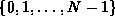
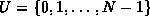
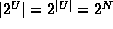
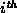
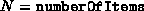
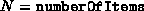
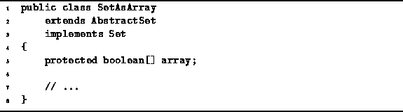

Data Structures and Algorithms
with Object-Oriented Design Patterns in Java
Data Structures and Algorithms
with Object-Oriented Design Patterns in JavaIn this section we consider finite sets over a finite universe. Specifically, the universe we consider is , the set of integers in the range from zero to N-1, for some fixed and relatively small value of N.
Let  be the universe. Every set which we wish to represent is a subset of U. The set of all subsets of U is called the power set of U and is written . Thus, the sets which we wish to represent are the elements of . The number of elements in the set U, written |U|, is N. Similarly, . This observation should be obvious: For each element of the universal set U there are only two possibilities: Either it is, or it is not, a member of the given set.
This suggests a relatively straightforward representation of the elements of --an array of boolean values, one for each element of the universal set. By using array subscripts in U, we can represent the set implicitly. That is, i is a member of the set if the  array element is true.
Program  introduces the class SetAsArray.
The SetAsArray class extends the AbstractSet class
defined in Program .
This class uses an array of length 
to represent the elements of where .
introduces the class SetAsArray.
The SetAsArray class extends the AbstractSet class
defined in Program .
This class uses an array of length 
to represent the elements of where .

Program: SetAsArray fields.
 Copyright © 1998 by Bruno R. Preiss, P.Eng. All rights reserved.
Copyright © 1998 by Bruno R. Preiss, P.Eng. All rights reserved.